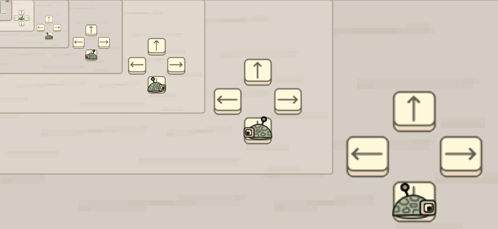

January 3, 2021
It's turtles all the way down.
This game uses an interesting mechanic: you control a player which moves around the screen pressing buttons to move another player, who moves around pressing buttons to control another player, who controls another player, who controls another, and another, and another... see how many layers deep you can get, and try out the different levels for a greater challenge.
Turtles Ad InfinitumDecember 6, 2020
Have you ever watched a game on television that was so boring that you would rather "watch paint dry"? Well, now you can.
Watch Paint DryNovember 24, 2020
I made a program which records the number of times I pressed each key on my keyboard.
Above is the resulting heatmap - the more pink the color is, the greater the key's frequency. The coloring uses a polynomial
scale, because backspace, right, space and "s" have a far greater frequency than the others. I left the
program running in the background of my computer for a day, and I got some surprising results.
Most interestingly, the letter "s" had a greater frequency than the space key, as well as the letter "e" - which was quite surprising given that "e" is the
most used letter in the English language. This could just be an anomaly, but I am of the opinion that this is due to all my incessant presses of Ctrl-S.
November 8, 2020
Built for HackPHS 2020 by me and Nate Myers
An attempt to make Twitter more humorous, Twarble replaces every word in a tweet with its most obnoxiously verbose synonym. There's also a chatroom feature which allows users to type in meaningful text and see it converted to nonsensical gibberish. Obviously, this is very useful and has many practical applications.
November 1, 2020
Shoot for the moon.
If you miss
You’ll end up in a heliocentric orbit
With Earth just out of reach
As your ship’s oxygen slowly runs out.
October 25, 2020
I wrote this around two years ago and I think it's quite a humorous little piece of writing.
They may not look as pretty, or as fluffy, or as huggable as a supermarket turkey, but it’s worth it! Many turkey shelters around the world contain extremely sad turkeys that only wish to have a nice and happy family. Also, while supermarket turkeys may taste better, shelter turkeys are available for one-tenth of the price. In fact, shelter turkeys are shipped more fresh than supermarket turkeys. Shelter turkeys are shipped alive, whereas supermarket turkeys are slaughtered, stuffed full of random substances, and then jammed into plastic wrapping. The conditions that supermarket turkeys is also deplorable, with most of them being raised and force-fed in cages in turkey factories. This also creates substantial loss of taste in the turkeys. Besides, the cost of having a shelter turkey is very small. The cost to buy them is only 1-4 dollars and the turkey doesn’t need to be fed. Simply tie the turkey to a tree and leave it there until Thanksgiving. Just make sure it goes into the refrigerator once it dies. So this Thanksgiving, please think about adopting a cute little shelter turkey. There’s a lot of room in your oven. Shelter Turkeys are available on Amazon, The Silk Road, and [Insert name of your local supermarket here].